Mijn ervaring
Edinburgh Castle
Het kasteel was echt enorm groot, om binnen het kasteel te komen moest je ook een kaartje kopen wat we hadden gedaan en dat was het ook zeker waard. Het kasteel werd natuurlijk ook als fort gebruikt en beschikte daarom ook over niet een maar twee gevangenissen waar we ook in konden kijken. Ook zijn "the Honours of Scotland" te vinden in het kasteel maar we mochten hier helaas geen foto's van maken aangezien dat was verboden. Edinburgh Castle bezit ook over een honden begraafplaats. Hier werden de honden van de soldaten toendertijd begraven. En er was ook nog een Kapel in het kasteel. Er was dus echt van alles te zien en een leuke ervaring! Helaas waren we er alleen op een zondag dus hebben we de one o'clock gun helaas niet mee kunnen maken.
 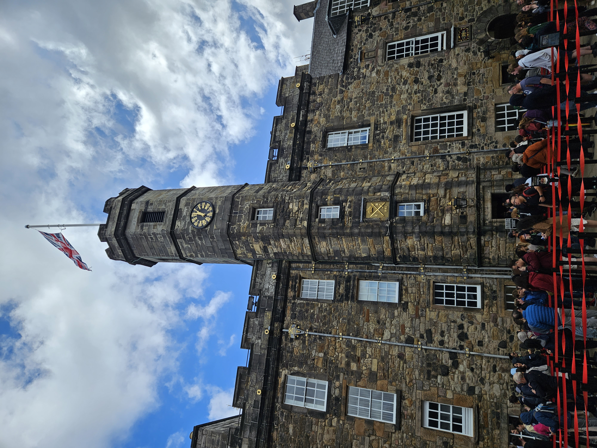
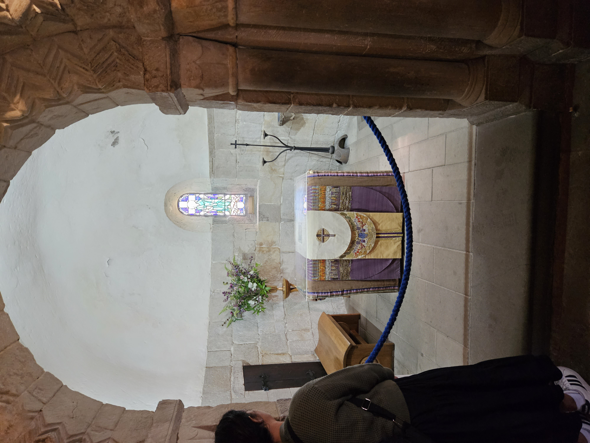
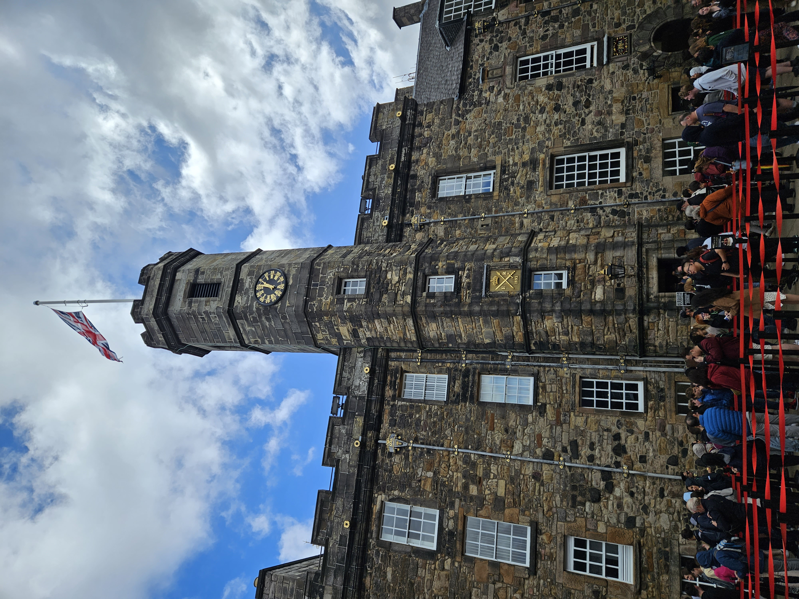
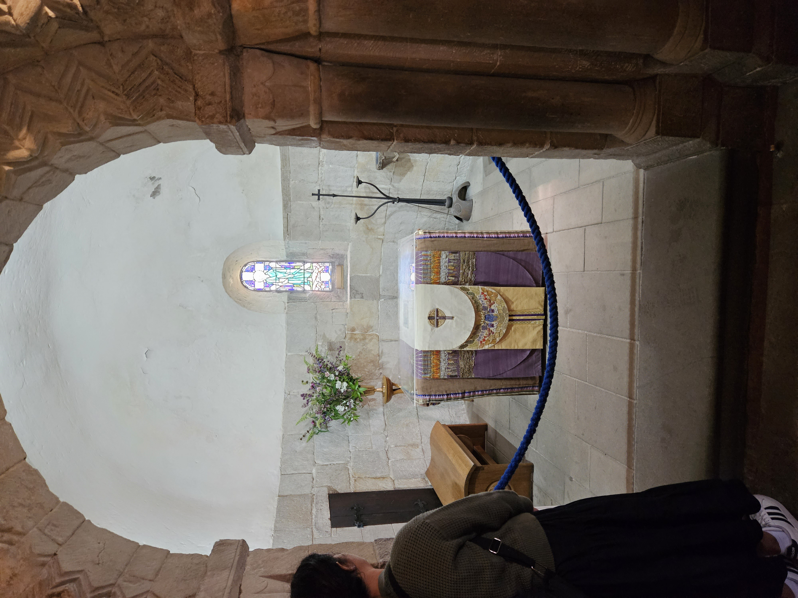
Edinburgh Zoo
Tijdens mijn bezoek aan Edinburgh ben ik natuurlijk ook naar de dierentuin gegaan! Ik kwam vooral voor de panda, maar die was eerlijk gezegd best wel saai... maar evengoed super schattig! Hij lag alleen maar stil zijn bamboe te eten, dit was oprecht ook het enige wat hij deed. Verder hebben we onder andere nog de Pinguïns gezien die ook enorm schattig waren en nog een koala en heel veel soorten apen! De dierentuin is ook zeker een bezoekje waard maar verheug je niet al te veel op de Panda's want deze voeren letterlijk geen ene bal uit.

 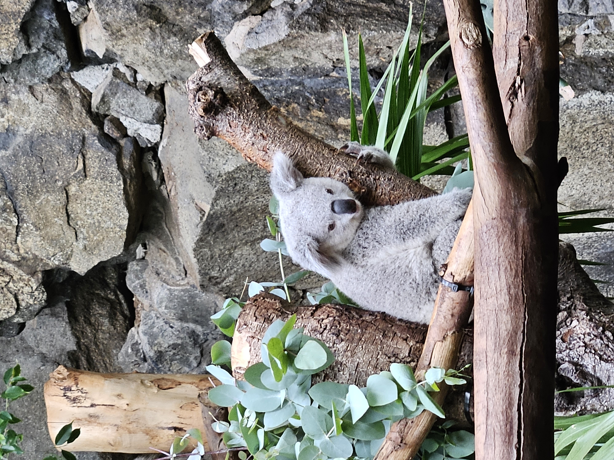
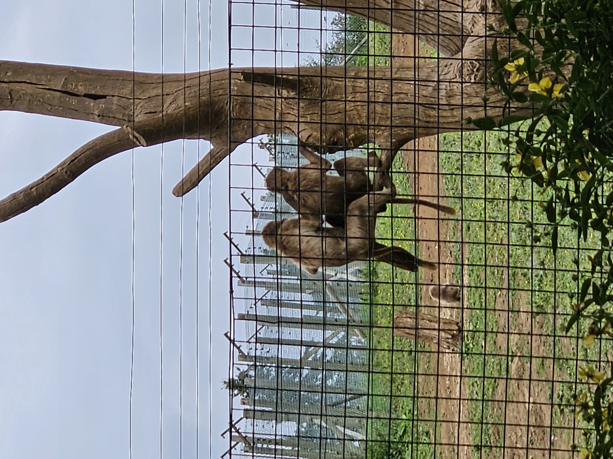
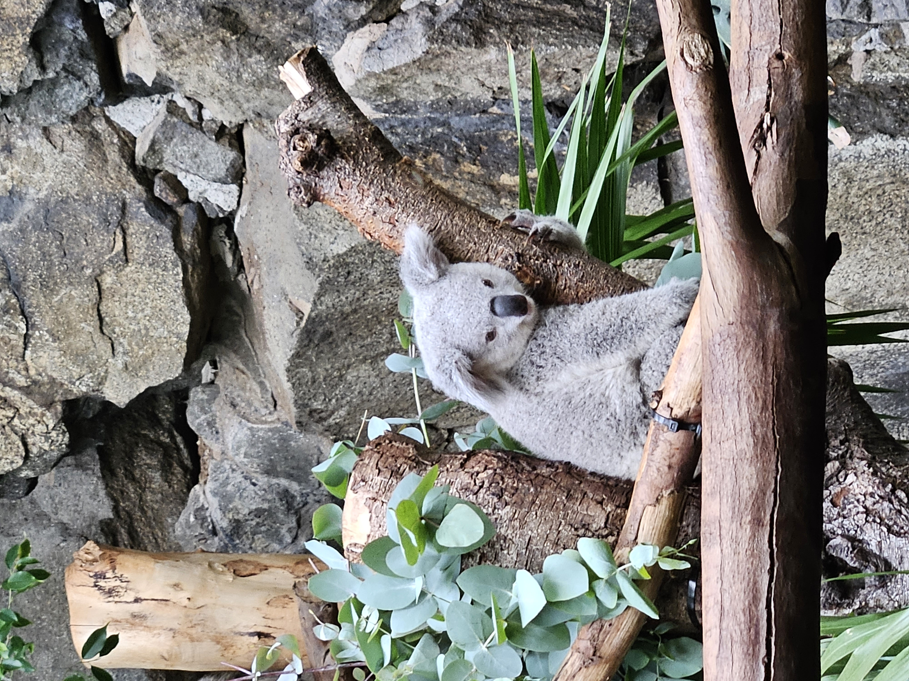
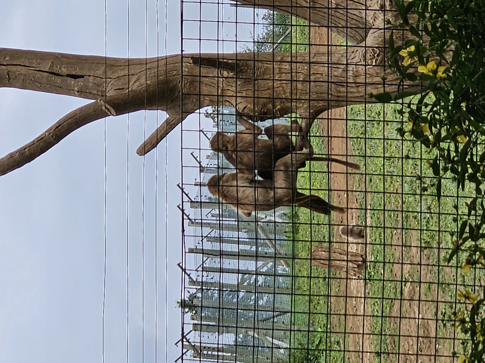
Dean Village
Dean Village is echt een dorp uit een sprookje naar mijn mening, het is de ideale plek om even tot rust te komen na een dag in het drukke Edinburgh. Het dorp ligt aan een mooie rivier langs genaamd "the Water of Leith" wat de hoofdrivier is van Edinburgh waar je enorm mooi zicht op hebt wanneer je erlangs loopt. Je kunt er ook overheen lopen via meerdere bruggen die te vinden zijn in Dean Village waar je ook super mooie foto's kunt maken. Dean Village is echt een bezoekje waard! Het dorp deed me kwa architectuur ook een klein beetje denken aan de Efteling, echt een sprookje dus.
 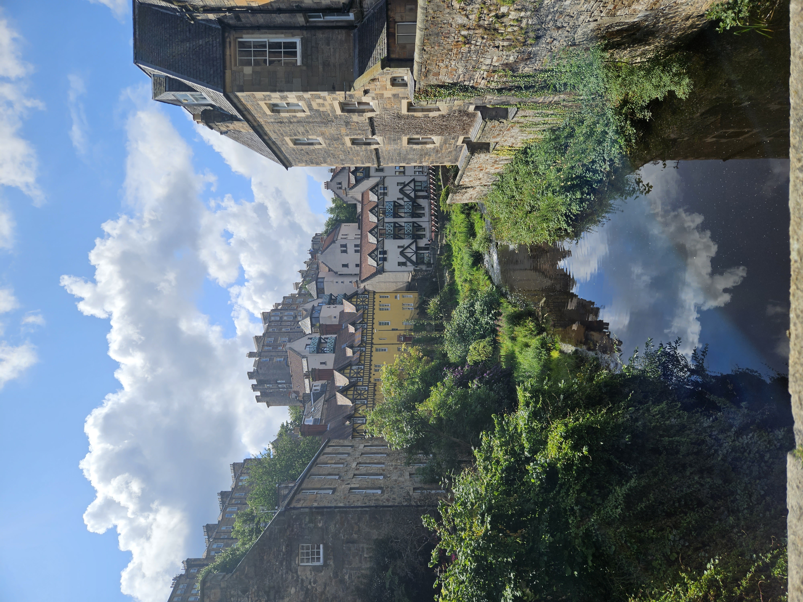
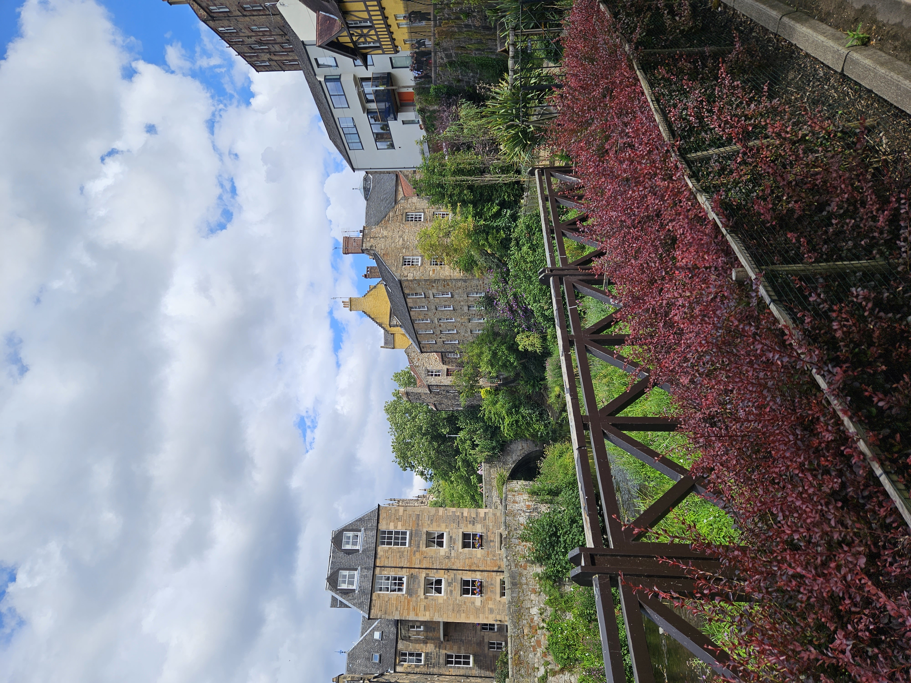
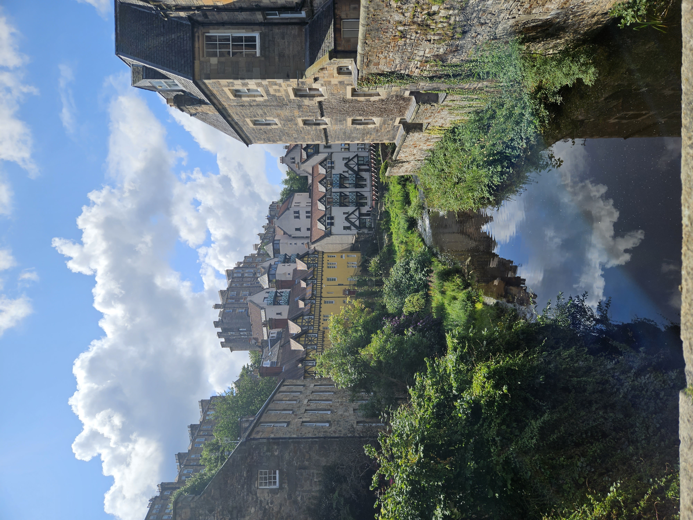
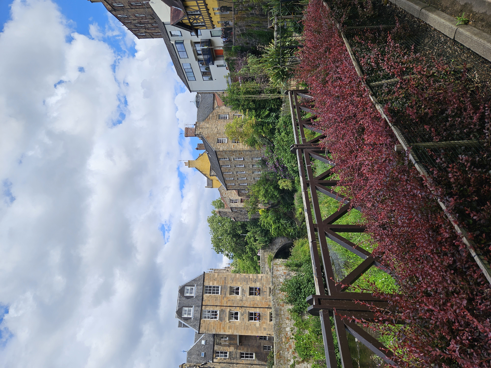